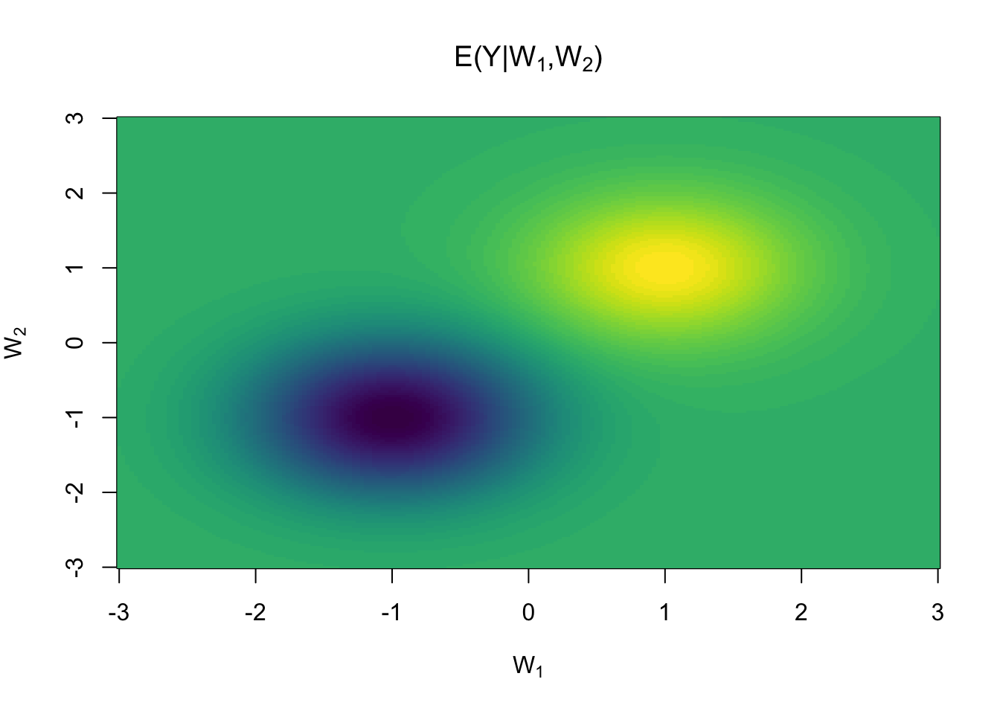
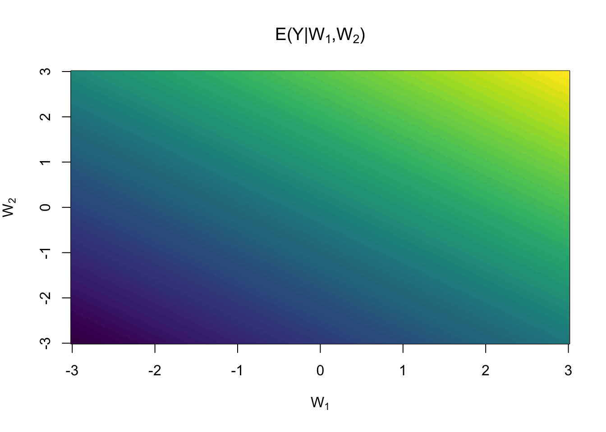
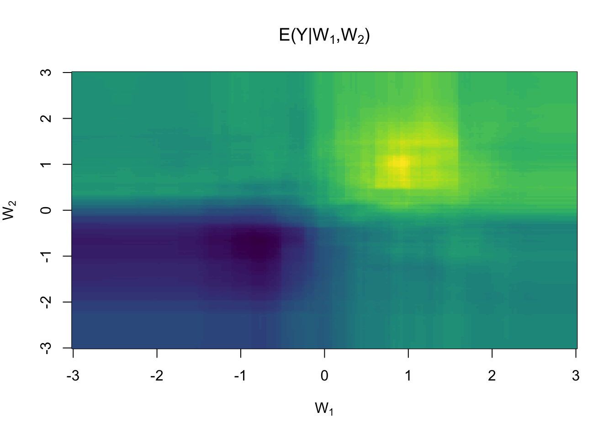

Various methods for targeted learning and semiparametric inference including augmented inverse probability weighted (AIPW) estimators for missing data and causal inference (Bang and Robins (2005) doi:10.1111/j.1541-0420.2005.00377.x), variable importance and conditional average treatment effects (CATE) (van der Laan (2006) doi:10.2202/1557-4679.1008), estimators for risk differences and relative risks (Richardson et al. (2017) doi:10.1080/01621459.2016.1192546), assumption lean inference for generalized linear model parameters (Vansteelandt et al. (2022) doi:10.1111/rssb.12504).
Installation
You can install the released version of targeted from CRAN with:
install.packages("targeted")And the development version from GitHub with:
remotes::install_github("kkholst/targeted", ref="dev")Computations such as cross-validation are parallelized via the future package. To enable parallel computations and progress-bars the following code can be executed
Examples
To illustrate some of the functionality of the targeted package we simulate some data from the following model Y = \exp\{-(W_1 - 1)^2 - (W_2 - 1)^2)\} - 2\exp\{-(W_1+1)^2 - (W_2+1)^2\}A + \epsilon with independent measurement error \epsilon\sim\mathcal{N}(0,1), treatment variable A \sim Bernoulli(\text{expit}\{-1+W_1\}) and independent covariates W_1, W_2\sim\mathcal{N}(0,1/2).
library("targeted")
simdata <- function(n, ...) {
w1 <- rnorm(n) # covariates
w2 <- rnorm(n) # ...
a <- rbinom(n, 1, plogis(-1 + w1)) # treatment indicator
y <- exp(- (w1 - 1)**2 - (w2 - 1)**2) - # continuous response
2 * exp(- (w1 + 1)**2 - (w2 + 1)**2) * a + # additional effect in treated
rnorm(n, sd=0.5**.5)
data.frame(y, a, w1, w2)
}
set.seed(1)
d <- simdata(5e3)
head(d)
#> y a w1 w2
#> 1 -0.59239667 0 -0.6264538 -1.5163733
#> 2 0.01794935 0 0.1836433 0.6291412
#> 3 0.24968229 0 -0.8356286 -1.6781940
#> 4 1.34434300 1 1.5952808 1.1797811
#> 5 1.16367655 0 0.3295078 1.1176545
#> 6 -0.94757031 0 -0.8204684 -1.2377359
wnew <- seq(-3,3, length.out=200)
dnew <- expand.grid(w1 = wnew, w2 = wnew, a = 1)
y <- with(dnew,
exp(- (w1 - 1)**2 - (w2 - 1)**2) -
2 * exp(- (w1 + 1)**2 - (w2 + 1)**2)*a
)
image(wnew, wnew, matrix(y, ncol=length(wnew)),
col=viridisLite::viridis(64),
main=expression(paste("E(Y|",W[1],",",W[2],")")),
xlab=expression(W[1]), ylab=expression(W[2]))
Nuisance (prediction) models
Methods for targeted and semiparametric inference rely on fitting nuisance models to observed data when estimating the target parameter of interest. The targeted package implements the R6 reference class learner to harmonize common statistical and machine learning models for the usage as nuisance models across the various implemented estimators, such as the targeted:cate function. Commonly used models are constructed as learner class objects through the learner_* functions.
As an example, we can specify a linear regression model with an interaction term between treatment and the two covariates W_1 and W_2
lr <- learner_glm(y ~ (w1 + w2)*a, family = gaussian)
lr
#> ────────── learner object ──────────
#> glm
#>
#> Estimate arguments: family=<function>
#> Predict arguments:
#> Formula: y ~ (w1 + w2) * a <environment: 0xae131d0e0>To fit the model to the data we use the estimate method
lr$estimate(d)
lr$fit
#>
#> Call: stats::glm(formula = formula, family = family, data = data)
#>
#> Coefficients:
#> (Intercept) w1 w2 a w1:a w2:a
#> 0.18808 0.13044 0.08253 -0.33517 0.15330 0.24068
#>
#> Degrees of Freedom: 4999 Total (i.e. Null); 4994 Residual
#> Null Deviance: 3098
#> Residual Deviance: 2741 AIC: 11200Predictions, E(Y\mid W_1, W_2), can be performed with the predict method
head(d) |> lr$predict()
#> 1 2 3 4 5 6
#> -0.01878799 0.26395942 -0.05942914 0.68687155 0.32330487 -0.02109944
pr <- matrix(lr$predict(dnew), ncol=length(wnew))
image(wnew, wnew, pr, col=viridisLite::viridis(64),
main=expression(paste("E(Y|",W[1],",",W[2],")")),
xlab=expression(W[1]), ylab=expression(W[2]))
Similarly, a Random Forest can be specified with
lr_rf <- learner_grf(y ~ w1 + w2 + a, num.trees = 500)Lists of models can also be constructed for different hyper-parameters with the learner_expand_grid function.
Cross-validation
To assess the model generalization error we can perform k-fold cross-validation with the cv method
mod <- list(glm = lr, rf = lr_rf)
cv(mod, data = d, rep = 2, nfolds = 5) |> summary()
#> , , mse
#>
#> mean sd min max
#> glm 0.5498117 0.02987117 0.5085057 0.5969734
#> rf 0.5070569 0.03177828 0.4597520 0.5534290
#>
#> , , mae
#>
#> mean sd min max
#> glm 0.5907746 0.01516298 0.5686472 0.6148165
#> rf 0.5684956 0.01659710 0.5453521 0.5953637Ensembles (Super-Learner)
An ensemble learner (super-learner) can easily be constructed from lists of learner objects
sl <- learner_sl(mod, nfolds = 10)
sl$estimate(d)
sl
#> ────────── learner object ──────────
#> superlearner
#> glm
#> rf
#>
#> Estimate arguments: learners=<list>, nfolds=10, meta.learner=<function>, model.score=<function>
#> Predict arguments:
#> Formula: y ~ (w1 + w2) * a <environment: 0xae131d0e0>
#> ─────────────────────────────────────
#> score weight
#> glm 0.5499084 0.03290729
#> rf 0.5070931 0.96709271
pr <- matrix(sl$predict(dnew), ncol=length(wnew))
image(wnew, wnew, pr, col=viridisLite::viridis(64),
main=expression(paste("E(Y|",W[1],",",W[2],")")),
xlab=expression(W[1]), ylab=expression(W[2]))
Average Treatment Effects
In the following we are interested in estimating the target parameter \psi_a(P) = E_P[Y(a)], where Y(a) is the potential outcome we would have observed if treatment a had been administered, possibly contrary to the actual treatment that was observed, i.e., Y = Y(A). To assess the treatment effect we can then the consider the average treatment effect (ATE) E_P[Y(1)]-E_P[Y(0)], or some other contrast of interest g(\psi_1(P), \psi_0(P)). Under the following assumptions
- Stable Unit Treatment Values Assumption (the treatment of a specific subject is not affecting the potential outcome of other subjects)
- Positivity, P(A\mid W)>\epsilon for some \epsilon>0 and baseline covariates W
- No unmeasured confounders, Y(a)\perp \!\!\! \perp A|W
then the target parameter can be identified from the observed data distribution as E(E[Y|W,A=a]) = E(E[Y(a)|W]) = E[Y(a)] or E[Y I(A=a)/P(A=a|W)] = E[Y(a)].
This suggests estimators based on outcome regression (g-computation) or inverse probability weighting. More generally, under the above assumption we can constructor a one-step estimator from the Efficient Influence Function combining these two E\left[\frac{I(A=a)}{\Pi_a(W)}(Y-Q(W,A)) + Q(W,a)\right].
In practice, this requires plugin estimates of both the outcome model, Q(W,A) := E(Y\mid A, W), and of the treatment propensity model \Pi_a(W) := P(A=a\mid W). The corresponding estimator is consistent even if just one of the two nuisance models is correctly specified.
First we specify the propensity model
prmod <- learner_glm(a ~ w1 + w2, family=binomial)We will reuse one of the outcome models from the previous section, and use the cate function to estimate the treatment effect
a <- cate(response.model = lr_rf, treatment.model = prmod, data = d, nfolds = 5)
a
#> Estimate Std.Err 2.5% 97.5% P-value
#> E[y(1)] -0.1700 0.02628 -0.2215 -0.1185 9.939e-11
#> E[y(0)] 0.1765 0.01272 0.1515 0.2014 9.034e-44
#> ───────────
#> (Intercept) -0.3464 0.02846 -0.4022 -0.2907 4.308e-34In the output we get estimates of both the mean potential outcomes and the difference of those, the average treatment effect, given as the term (Intercept).
summary(a)
#> cate(response.model = lr_rf, treatment.model = prmod, data = d,
#> nfolds = 5)
#>
#> Estimate Std.Err 2.5% 97.5% P-value
#> E[y(1)] -0.1700 0.02628 -0.2215 -0.1185 9.939e-11
#> E[y(0)] 0.1765 0.01272 0.1515 0.2014 9.034e-44
#> ───────────
#> (Intercept) -0.3464 0.02846 -0.4022 -0.2907 4.308e-34
#>
#> Average Treatment Effect:
#> Estimate Std.Err 2.5% 97.5% P-value
#> [E[y(1)]] - [E[y(0)]] -0.3464 0.02846 -0.4022 -0.2907 4.308e-34Here we use the nfolds=5 argument to use 5-fold cross-fitting to guarantee that the estimates converges weakly to a Gaussian distribution even though that the estimated influence function based on plugin estimates from the Random Forest does not necessarily lie in a P-Donsker class.
Project organization
We use the dev branch for development and the main branch for stable releases. All releases follow semantic versioning, are tagged and notable changes are reported in NEWS.md.
I Have a Question / I Want to Report a Bug
If you want to ask questions, require help or clarification, or report a bug, we recommend to either contact a maintainer directly or the following:
- Open an Issue.
- Provide as much context as you can about what you’re running into.
- Provide project and platform versions, depending on what seems relevant.
We will then take care of the issue as soon as possible.
Contributing to targeted
All types of contributions are encouraged and valued. See the CONTRIBUTING.md for details about how to contribute code to this project.